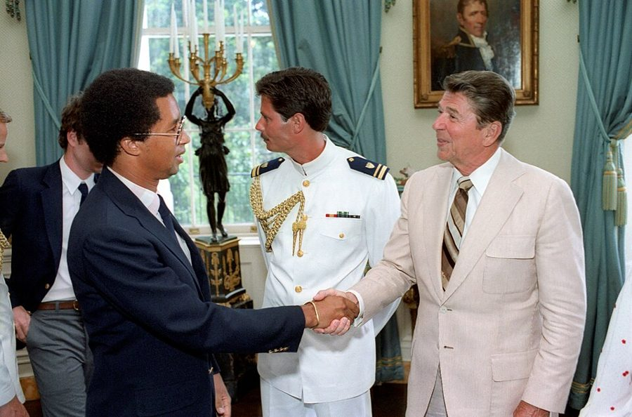
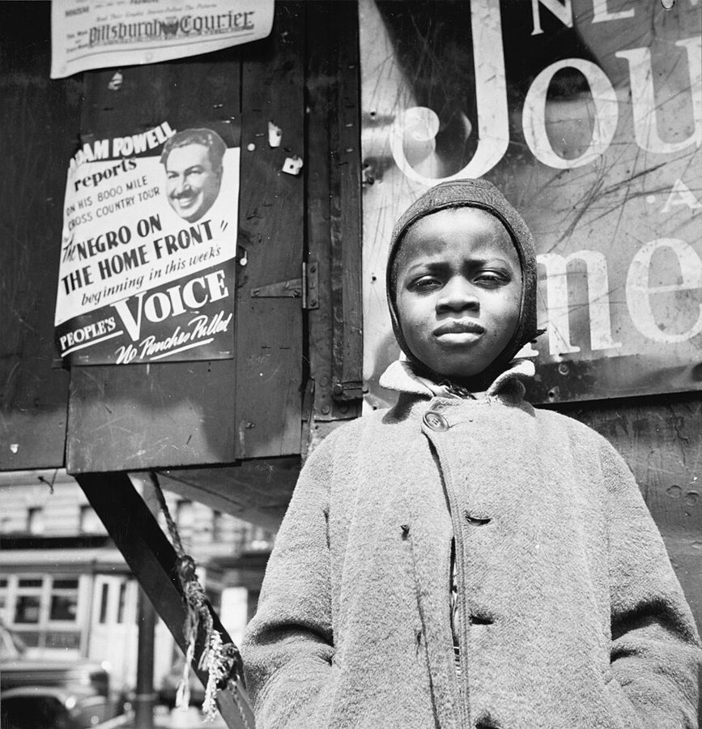
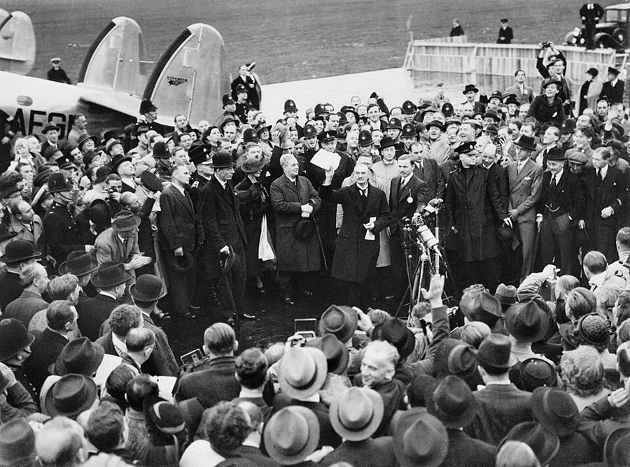

这一页在做什么
五十五到五十七岁，在胡佛研究所。上一页停在 1984 年环球旅行回来，这一页直接跳到 1986 年。十封信加一篇专栏，他写出去六封，写来四封。三条线：劝里根政府撤掉平权法案的行政命令，没成；和母校哈佛的两次过招；一篇为一位自杀的年轻记者补写的专栏。
读的时候留意来信：四位写信的人，各自从他那里读出了什么。
1986 1987 1988
胡佛研究所
环球旅行、Bork 听证：信里没有
他写的
Glenn Brad Salient Hu Dean Spence Andre 附一篇专栏
写来的
David Arthur Mr. Forn Midge
本站示意图。圆点是他写出去的信，方块是写来的，按信上的日期画。Arthur Ashe 那封只写了 5 月 20 日，没写年份，书把它排在 1986 年的信中间，图上的位置是随手放的。1985 年一封信也没有。
这是 80 年代的最后一页。下一封信要到 1991 年 10 月，中间隔了将近四年。
收信人和提到的人
这一页有十位通信的人：六位是他写过去的，四位是写来的。写来的四位都是书里给了全名的人。
Glenn Glenn Loury · 经济学家 1981 年他还称对方 Professor Loury，写信去挑一个论断的毛病（见 80 年代第二页）。五年后称呼成了 Glenn，是请来为 New Black Voices 受访的人。这封信告诉对方：书要推迟。
Brad William Bradford Reynolds · 助理司法部长 他飞到华盛顿游说时见的官员之一。回来后写的这封信名义上是道谢，实际是把反对平权法案的理由从头说了一遍。这一页最长的信。
Clarence Thomas 只被提到 · 当时主持平等就业机会委员会 串场文字说，同样意思的信他也写给了 Thomas 和里根总统。那两封书里没印。
David David Riesman · 哈佛的社会学家 · 写来的 上一页出现过，两人断断续续通信。他寄去一本文集，Riesman 回信补了一个例子：被哈佛招进来却读得很苦的，不只是黑人学生。只印了一句话。
Arthur Arthur Ashe · 网球明星 · 写来的 素不相识，手写了一封短信，请他去参加一个黑人领袖的闭门聚会。称呼是 Dear Dr. Sowell，落款只有名，底下留了两个电话。
Dear Sirs Harvard Salient · 哈佛的保守派学生报 学生报寄来募捐信，他捐了一小笔钱，附一封长信，说明为什么捐给他们而不捐给哈佛。
Hu 牙买加一家智库的东道主 · 书里只有这个称呼 他去牙买加一家主张自由市场的智库演讲，回来后写的信。只印了一段，讲第三世界国家里谁被说成寄生虫。
Dean Spence Michael Spence · 哈佛的院长，经济学家 他从 Salient 上读到这位院长主张少请「有争议」的演讲人，写了两段话去问。称呼用职务加冒号，是不认识的人之间的公事信。
Leanita McClain 只被提到 · 《芝加哥论坛报》的黑人女记者 1980 年他读了她在《新闻周刊》上的文章，想写信给她，没写。1984 年她自杀。1987 年的专栏是替那封没写的信写的。
Andre 芝加哥的朋友 · 书里只有名 寄来 McClain 的文集。回信只印了一段，后面接着那篇专栏。
Albert J. Forn 律师，在哈莱姆长大 · 写来的 读了《福布斯》上写他的那篇特写，来信说了自己长大的那栋楼。四句话。他在信后用一长段串场文字接着往下说。
Midge Midge Decter · 朋友，以前编过他的书 · 写来的 他想找出版社重印张伯伦的一本演讲集，自己写长序，先写信问她。这是她的回信，一盆冷水。
Dear Tom 和 Dear Dr. Sowell。 称呼是这两种的四封都是别人写来的。Riesman 和 Decter 是熟人，叫他 Tom，用冒号；Ashe 和 Forn 是头一次写信，叫他 Dr. Sowell。Ashe 用的是逗号，落款 Thanks，是便条的写法，信的第一句自己也道了歉。
信里顺口提到的名字。 给 Brad 的信里的 Michael Horowitz，是 Reynolds 在华盛顿介绍他认识的人，书里没有再说。给 Andre 的信里的 Fred「Doc」Holliday，信里自己交代了：克利夫兰的黑人学区总监，一两年前自杀。
信件地图
一条是一封信。斜体字是那封信正文开头的几个词，照这一版屏幕上的字抄的，在 Kindle 里搜它就能跳过去。编号是黄底的，是别人写来的信；这一页有四封。「留意」只给方向，答案在信里。
Many thanks for agreeing to 1986 年 1 月 24 日 · 写给 Glenn Loury 留意：信里说的是推迟；信后那段串场说的是什么。头一段里那句夸奖夸的是哪一点。Travel and the Christmas holidays 1986 年 1 月 27 日 · 写给 Brad（William Bradford Reynolds） 留意：他给了两层理由，哪一层在先。the anointed 指谁。结尾一句在撇清什么。Harvard College remains very hard 1986 年 3 月 4 日 · David Riesman 写来 留意：整封只有一个长句。Riesman 说的是哪几种学生；分号后面那半句才是重点。Forgive the informality-I just wanted 5 月 20 日，没写年份 · Arthur Ashe 写来 留意：Ashe 把到会的人分成哪两种，把他算在哪一种里。For some time I have felt 1986 年 5 月 28 日 · 写给 Harvard Salient 留意：他说的两难是什么；他当年在哈佛是哪一派；舍监那个细节想说明什么。The basic problem of many 1987 年 5 月 6 日 · 写给 Hu 留意：谁把谁说成寄生虫；他说自己想象力贫乏，是当真的吗。A recent issue of the Harvard 1987 年 5 月 13 日 · 写给 Dean Spence 留意：先看信前的串场，知道 Spence 以什么理论出名，再读第二段的最后两句。Many thanks for sending me 1987 年 5 月 19 日 · 写给 Andre 留意：破折号中间插的那句话；最后一句的 throw away 是谁在扔。Few books have saddened me 没写日期，1987 年 · 专栏 Racial Hype，接在给 Andre 的信后面 留意：delivered 这个词用了几次；他拿哪一年的哈佛作对比；他认为压力从哪几头来。A write up in Forbes is 1987 年 9 月 10 日 · Albert J. Forn 写来 留意：Forn 是在反驳他，还是在反驳《福布斯》；最后一句的 orthodoxy 是谁的用词。It was great to hear from 1987 年 12 月 30 日 · Midge Decter 写来 留意：她泼了两盆冷水，第二盆落在谁头上；信前串场里他怎么评价这封回信。
背景：作者默认你知道的事
那两道行政命令
1965 · Johnson 第 11246 号行政命令： 政府承包商不得歧视
→
1969 起 · Nixon 任内 劳工部要承包商订出 数字目标和时间表
→
1985–86 · Reagan 任内 政府内部争： 这一套要不要撤
想撤的 司法部长 Meese、Reynolds 等人 他的信站在这一边
不想动的 劳工部长 Brock 等人 串场文字说：还有大企业
结果：里根没有签新的命令，原来的照旧
本站示意图。行政命令是总统一个人签的，不经国会，后任总统一支笔就能改。所以这场争论发生在政府内部，他才会飞去华盛顿一个一个地谈。
平权法案（affirmative action）在联邦这一层不是一部法律，主要靠行政命令：1965 年 Johnson 的第 11246 号要求政府承包商不得歧视；Nixon 任内劳工部加上了数字目标和时间表。1985 年司法部长 Edwin Meese 一派想改掉它，劳工部长 William Brock 等人反对。信里的 goals 和 quotas 之争就是这个：支持的人说目标不是配额，他认为换个名字没有区别。
里根和 Clarence Thomas 在椭圆形办公室。Thomas 当时主持平等就业机会委员会（E.E.O.C.）。串场文字说，他给这两个人都写了信，书里没印。White House Photographic Office，公有领域，维基共享资源 Arthur Ashe

1982 年 7 月，Arthur Ashe（左）在白宫和里根握手，那天里根接见美国戴维斯杯网球队。White House Photographic Office，公有领域，维基共享资源 美国网球选手，1968 年拿下美国公开赛，1975 年拿下温布尔登，是赢得这两项男单冠军的第一个黑人。1980 年因心脏病退役，之后写书、参与公共事务。信里的 Retreat 是他和一些人自己张罗的聚会，没有组织，没有主席。他去没去，书里没说。
哈佛的两份学生报，和一位院长
哈佛的 Kirkland House，他读本科时住的学舍。给 Salient 的信里，他记得的那场争论就发生在这栋楼外面。Ywu01，CC BY-SA 3.0，维基共享资源 Harvard Crimson 是 1873 年创刊的学生日报；Harvard Salient 是 1981 年才有的保守派学生刊物。哈佛的本科生分住十来个学舍（House），每个学舍有一位教授当舍监（Housemaster，现在不这么叫了）。
Michael Spence 当时是文理学院院长，后来因信号理论在 2001 年分享了诺贝尔经济学奖。
Spence 的理论（1973 年的论文）
求职者 能力，别人看不见
学历 = 信号 代价高，所以可信
雇主 凭信号猜能力
信里的反问（1987 年）
院长 少请有争议的人，省保安费
这是什么信号？
闹场的人 和想来演讲的人
本站示意图。上一行是 Spence 出名的那个模型的大意。下一行是这封信的用法：拿对方自己的术语问对方。信里没有把答案写出来。
Leanita McClain
《芝加哥论坛报》的记者，后来进了该报的社论委员会，是其中第一个黑人。1980 年 10 月她在《新闻周刊》的读者专栏发表 The Middle-Class Black’s Burden ，写黑人中产夹在两边之间的处境。1984 年 5 月自杀，三十出头。
文集 A Foot in Each World 1986 年出版，编者是她的前夫、记者 Clarence Page。专栏对她的死因有他自己的读法，那是他的看法。
哈莱姆的那几条街

1943 年的哈莱姆，报摊前的男孩。Gordon Parks 摄。和这本书无关，是 Forn 和他都在那里上学的年代。Gordon Parks，公有领域，维基共享资源 Forn 说的 143 街和 Amsterdam 大道在哈莱姆西侧。tenement 是纽约的老式出租公寓，五六层，没有电梯，所以叫 walk-up。Odyssey 第 2 章讲过他在这一带上小学和初中。
信后的串场文字把话引到今天的学校，口气比回忆录重得多，那是 2007 年的话。
张伯伦和 1938 年

1938 年 9 月 30 日，张伯伦从慕尼黑回到伦敦西郊的 Heston 机场，举着他和希特勒签的那张声明。Ministry of Information official photographer，公有领域，维基共享资源 Neville Chamberlain，1937 到 1940 年的英国首相。1938 年 9 月在慕尼黑同意把捷克斯洛伐克的苏台德区割给德国，回国时说带回了和平。不到一年，战争爆发。
In Search of Peace 是他 1939 年出的演讲集。他想重印它，是要拿来和 80 年代的和平运动对照；这个比法是他的看法，当时反对的人很多。
Odyssey 里讲过这一段
回忆录对 1981 年以后只有第 11 章的后半。这一页的十封信，它一封也没引，大部分事也没提。
和里根政府的距离 Odyssey 第 11 章（下） 回忆录是总括的说法：八年里保持独立，和高层谈过几次具体政策，不同意就写文章批评，连朋友 Clarence Thomas 主持的委员会输了官司他也叫好。信里是其中一次的现场：专程飞去游说，回来给三个人写信，结果落空。落空这一段回忆录没写。
去那一页 → 1987 年 Odyssey 第 11 章（下） 回忆录里这一年是两件事：第二次环球旅行，和为 Robert Bork 的提名去参议院作证。这本书里 1987 年的五封信对这两件事一个字没提，讲的是牙买加、哈佛的院长、一位记者的死、哈莱姆和张伯伦。两本书在这一年几乎不重合。
去那一页 → 哈佛，三十年后 Odyssey 第 5 章（下） 回忆录写哈佛，说的多是不喜欢的地方：把自以为是当成论证。给 Salient 的信换了个角度：当年他是马克思主义者，没有人因此压他的分、堵他的嘴。两处说的是同一所学校的同一段时间。
去那一页 → 哈莱姆的学校 Odyssey 第 12 章 回忆录末章把「赶上了纽约公立学校还好的年代」算作运气，只有一句。Forn 的信从另一个人嘴里说了同一件事，后面那段串场文字再把它展开成对今天的批评。
去那一页 → 没出的书，没写的信 回忆录没写 New Black Voices 做了几年采访，最后没出；Ashe 的邀请；想给 Leanita McClain 写而没写的那封信；重印张伯伦演讲集的打算。这几件回忆录都没提。
这一版的错字
只收会让人读不懂、或者在 Kindle 里搜不到的。第一格是屏幕上的字，照抄的；第二格是本站有把握的原字。问号前多出来的撇号全书都有，见「开读之前」，这里不列。
屏幕上的字 应为 在哪 doubts were reinti rced by doubts were reinforced by 这一页的第一段串场 this would he done this would be done 给 Brad 的信前面的串场。be 认成了 he no way of'knowing no way of knowing Ashe 来信前面的串场 no formal organization there is no chairman organization—there is no chairman Ashe 的信。破折号整个丢了，两句话粘在一起 Politics Q/ Race Politics of Race Ashe 的信里提到的书名。斜体的 of 认坏了 scheme of things it not a particular it is not a particular 给 Salient 的信最后一句。掉了 is they disapproved of Michael Spence was disapproved of. Michael Spence was 给 Spence 的信前面的串场。句号丢了，其实是两句 read in New.vweek magazine read in Newsweek magazine 给 Andre 的信前面的串场。搜 Newsweek 搜不到 overcome such harriers overcome such barriers Forn 来信后面的串场。下一句的 internal harriers 也是 a plan -really a hope to get a plan—really a hope—to get Decter 来信前面的串场。两个破折号一个成了短横，一个丢了 ill-tated Prime Minister ill-fated Prime Minister 同一句 explaining that (I) Chamberlain's (1) Chamberlain's 同一段。编号 1 认成了字母 I，后面的 (2) 是对的
方括号和两种短横。 专栏里的 [the students'] 和 [marshall] 是编书时加的方括号，不是错字；class marshal 是毕业班选出来的代表。这一页的破折号有的印成一个短横（informality-I 、are-and must be-depicted ），有的印成两个（currents--aimed ），都当破折号读。这一页没有做成图片的脚注或信头。
词与短语
按信的顺序排，串场文字里的词条归到它后面那封信的组里。斜体小字是那句话里的几个词，照这一版屏幕上的字抄的（撇号是直的），在 Kindle 里搜它就能跳到那一句。单个的生词长按就能查，这里收的主要是词典帮不上忙的。
1986 年 1 月 · 给 Glenn
vita
… for sending your vita. Incidentally, it …
学术简历
curriculum vitae 的简称，学术圈的说法，列的是论文和职位。下一句就是他从简历里看出来的事。
on the racial front
… efforts on the racial front have not …
在种族问题这条战线上
front 是战线。意思是你在这上面花了那么多力气，本行的论文却没耽误。这是他最看重的一种夸法。
back off
… have decided to back off my plan …
收回，往后撤
不是放弃，是从原定的进度上退下来。
wrap it up
… to wrap it up quickly in February. …
把它收尾
本来说打包。it 是那本书。
in the flesh
… the people in the flesh and caught …
面对面，见到真人
他的担心在这里：当面听到的语气，纸上未必留得住。
resign oneself to
… so I have resigned myself to seeing …
只好认了
和辞职无关。不情愿，但接受。
do justice to
… writing had done justice to the stories …
配得上，没有辜负
这是 2007 年的串场，说得比信里重：信里是推迟，这里是不出了。
1986 年 1 月 · 给 Brad
rescind the Executive Orders
… President to rescind the Executive Orders from …
撤销那几道行政命令
rescind 是正式用语，专说撤销命令、合同、决定。见背景。
preferences and quotas
… that preferences and quotas were both wrong …
优待和配额
他从不用 affirmative action 这个名字来称呼它，要用也加引号。这两个词才是他的叫法。
generous with your time
… being so generous with your time when …
肯花那么多时间见我
道谢的套话，对忙人说的。
out this way
… When you are out this way, I hope …
到我们这一带来
out 是从东海岸往西说。他在加州。
so-called
… As to so-called “affirmative action,” which has …
所谓的
so-called 加引号，双重的不承认。全信凡是这个词都带引号。
on the receiving end of
… on the receiving end of discrimination for …
挨……的那一头
往轻里说：被歧视了很多年。
find the cleverness to
… I cannot find the cleverness to justify …
没有那份聪明去……
反着读。cleverness 在这里是贬义：替歧视找理由需要一种他不想要的巧辩。
whose ox is gored
… question of whose ox is gored, then …
看吃亏的是谁家
英语老话：谁家的牛被顶伤了，谁才喊疼。意思是立场只看利害落在谁头上。
repeal
… the gradual repeal of the American Revolution. …
废除
本来只说废除法律。把一场革命说成可以被逐条废除的法律，是这封信的中心比喻。
fall victim to
… the civil rights era fell victim to other …
成了……的牺牲品
他把民权时代和后来的优待政策分成两件事，前者肯定，后者反对。
the common man
… freedom of the common man but at …
普通人，老百姓
政治演说里的固定说法，不是「平庸的人」。这封信用了四次。
the morally self-anointed
… hands of the morally self-anointed. Some …
自封的道德上等人
anoint 是给国王、祭司涂圣油。自己给自己涂，是挖苦。九年后他用这个词做了书名 The Vision of the Anointed （1995）。
Naderites
… environmental extremists to Naderites to the tragically …
Nader 的追随者
Ralph Nader，60 年代起靠告汽车公司出名的消费者权益活动家。同一句里加引号的 peace movement，他认为名不副实，Decter 那封信前面还会说到。
They of course phrase it differently
… They of course phrase it differently. …
他们自己当然不这么说
冷话。承认上面那句是他的概括，对方不会认。
salted and peppered
… are salted and peppered here and there. …
这里那里撒上一点
像撒盐和胡椒。说的是 voluntary 这类字眼只是调味，菜没换。
make numbers look good
… to make numbers look good to third …
把数字做得好看
给上面检查的人看的。前半句的 cheated out of 是「被骗走了本该有的」。
learn to live with
… has learned to live with it is …
学会了将就
不是喜欢，是不再反抗。句末的 beside the point 是「不相干」。四个点里三个是省略号：这里删了一段。
it is vain to
… it is vain to resist its corollaries, …
……是白费力气
vain 这里是徒劳，不是虚荣。corollary 是数学里的推论：前提认了，推论就挡不住。
verbal retouching
… so by a verbal retouching of …
字面上的修修补补
retouch 是修照片。他当过摄影师，这个比方是本行。指的是把配额改叫目标。
I speak for no one else
… I speak for no one else and …
我不代表任何人
后半句倒过来再说一遍。起因在前一句：Reynolds 说听别人转述过他的看法。
1986 年 3 月 · David Riesman 写来
mismatch
… that it mismatches black students with colleges, …
把……错配到
他在这个问题上的关键词：不是学生不行，是学生和学校没对上。这是他的论点，学界有争论。
geared to
… in colleges geared to students of their …
为……而设的，和……对得上的
gear 是齿轮，咬得上。
hard to navigate
… remains very hard to navigate for unsophisticated …
不容易摸清门道
把学校说成一片要领航的水域。unsophisticated 是没见过世面，不是笨。
geographic rarity
… athletic prowess, their geographic rarity, the judgment …
来自少见的地方
招生行话。名校要各州都有人，偏远州的申请人占便宜。前一项是体育特长。
a really good guy
… is a really good guy, and a …
「真是个好小伙」
Riesman 在学校友面试官的腔调。带一点讥讽：凭这种印象招进来的人。
in the absence of a real effort to fail
… absence of a real effort to fail, but …
只要不是存心想不及格
教授的冷话：哈佛几乎人人能毕业。前面的 gets through 是混到毕业。
invitations to learning
… have found invitations to learning in less …
让人想学的机会
全句的重点：这些人在压力小的学校本来会爱上读书，在这里只落下伤疤。pressureful 是 Riesman 自己造的词。
5 月 20 日 · Arthur Ashe 写来
get this note off
… wanted to get this note off to you. …
赶紧把这张便条发出去
get off 是寄出。为手写、不讲格式道歉。
Retreat
… 2nd Black Leadership Retreat would provide …
闭门聚会
熟词生义，不是撤退。一群人离开日常，找个地方住几天谈事。
hanging over their heads
… formal agenda hanging over their heads. …
压在头上
没有正式议程压着，大家才好认识。
a host of
… views about a host of things need …
一大堆
host 这里是「大群」，和主人无关。
traditionally-minded
… by the more traditionally-minded Black leader. …
想法比较传统的
说得客气。指民权组织的主流领袖，正是常批评他的那些人。Ashe 的意思是：他们该听听你的。
at your earliest convenience
… to me at your earliest convenience. …
请尽早
书信套话。字面是「您方便的最早时候」，实际是催。
1986 年 5 月 · 给 Harvard Salient
liberal-left line
… followed the usual liberal-left line, the Harvard …
自由派左翼的那一路调子
line 是路线、口径。follow the line 带「照本宣科」的意思。
capitulations
… from its shameful capitulations in the 1960s …
投降
指 60 年代末校方对占楼学生的让步。他在康奈尔亲历过一次，见 60 年代的页。
an accessory to
… unwilling to be an accessory to a trend …
……的从犯
法律用语，不是配件。专栏里说校方时又用了一次。
put my drop in a different bucket
… put my drop in a different bucket and …
把我这一滴倒进另一只桶
化用 a drop in the bucket （杯水车薪）。先自认捐得少，再说换了个地方捐。
out of step with
… very much out of step with prevailing views …
和……合不上拍
队列里踏错步子的那个人。
mark me down, put me down, or shout me down
… mark me down, put me down, or …
压我的分、贬我、把我轰下去
三个 down 三个意思：扣分，奚落，用喊声盖住。排比是有意的。
Housemaster
… classmate as the Housemaster passed by on …
学舍的舍监
见背景。这句的笑点在破折号后面：舍监去吃饭时他们在吵，吃完回来还在吵。
issue from
… Whatever lofty talk issues from university officials, …
从……嘴里出来
issues 是动词，talk 是主语。lofty talk 是唱高调。
boil down to
… What this boils down to is that …
说到底就是
熬干了剩下的东西。
fringe
… and coercive fringe will be indulged as …
边缘上的一小撮
本义是流苏、边。indulge 是纵容。
hurting in the pocketbook
… start hurting in the pocketbook will the …
钱包疼了
pocketbook 是钱包，不是小本子。这句是倒装：Only when … will … 。
the path of least resistance
… follow the path of least resistance, then …
最省事的那条路
物理学的说法。他的主意：既然校方只走阻力最小的路，那就让捐款人把阻力挪个位置。
1987 年 5 月 · 给 Hu
know-how and drive
… have the know-how and drive to increase …
本事和干劲
drive 作名词是冲劲。和它相对的是后半句的 academic credentials：文凭。
the poverty of my imagination
… it is the poverty of my imagination, …
我想象力贫乏
假谦虚。实际意思：按这样的处境和激励，结果只能是这样。末句的 galling 是叫人窝火。
1987 年 5 月 · 给 Dean Spence
pre-emptive surrender
… academic practice of pre-emptive surrender to disruptive …
没等人打就先投降
套用军事上的 pre-emptive strike（先发制人的打击）。同一段的 storm trooper 是纳粹冲锋队，这是 2007 年串场里的重话。
a fair summary
… Is this a fair summary of your …
这样概括公道吗
先给对方留一步：也许学生报写错了。礼数做足，下一段才好下手。
free market of ideas
… maintaining a free market of ideas is not …
思想的自由市场
通常说 marketplace of ideas。对一位经济学家院长，特意用了经济学的说法。
not one of the lesser concerns
… not one of the lesser concerns of …
可不是什么次要的事
往轻里说，意思是头等大事。开头的 Surely 是「您总不会不同意」。
I would not presume to
… I would not presume to tell you …
我不敢冒昧
客套话当刀子用。见下面「值得停下来的句子」。
any enlightenment you can provide
… appreciate any enlightenment you can provide as …
还请指教
反着读。他不是在请教，是在要对方自己说出这个政策等于鼓励闹场。
1987 年 5 月 · 给 Andre，和专栏 Racial Hype
pulled in all directions
… of being pulled in all directions by …
被四面八方拉扯
专栏里引了她自己的比方：拔河的那根绳子。
racial hype
… by the racial hype of our times. …
拿种族做文章的鼓噪
hype 是炒作、吹出来的声势。专栏的题目，也是他给这类言论起的总名。
snuffed out
… bright talent, snuffed out before it could …
被掐灭
本来说掐灭蜡烛。破折号里那句是他少有的温和话：她到六十岁会是很有见识的人。
to throw away
… have people like this to throw away. …
可以白白扔掉的
We 是黑人这个群体。意思是这样的人太少，一个也丢不起。
run a gauntlet
… having to run a gauntlet of criticism …
从两排人的夹击里穿过去
旧时的军中刑罚：受罚的人从两排士兵中间跑过，一路挨打。她要跑两趟，一趟黑人的，一趟白人的。
hustlers, and messiahs
… organizations, hustlers, and messiahs who depend …
混饭吃的和自命救世主的
hustler 是靠耍手段捞好处的人。前面加引号的 leaders 是不承认他们算领袖。
scavenging for grievances
… a segregated life-style, scavenging for grievances, issuing …
到处翻找可以抱怨的事
scavenge 是翻垃圾找吃的。全篇最刻薄的一个词。
whitey
… to whitey if they don't fall …
白人（黑人口语里的蔑称）
他在学那些人的腔调。sold out 是出卖了自己人。
fall in step with
… if they don't fall in step with the …
跟着齐步走
和给 Salient 的信里的 out of step 是一对。
parrot
… and parrot the pre-packaged ideology. …
鹦鹉学舌
名词当动词用。pre-packaged 是包装好的现成货。
heavy stuff
… it can be heavy stuff to be told …
够人受的
口语。专栏写给报纸读者，用词比信随便得多：kid、whitey、big deal。
play on
… know how to play on their vulnerabilities. …
利用，专往……上使劲
和玩无关。
delivered
… or movement, black students are delivered. …
被送货上门
这一段的关键词。白人学生是自己选社团，黑人学生是被校方像包裹一样交过去。下一段接着用 delivery。
under the auspices of
… separately, under the auspices of the Black …
由……出面主办
公文套话。Bates 是缅因州的一所文理学院。
clumped together
… the time clumped together in a corner. …
扎堆
clump 是一丛、一坨，说人不好听。Harvard class of 1958 就是他自己那一届。
take the hurdles in stride
… will take the hurdles in stride and …
不减速地跨过栏去
take something in stride ：不当回事地应付过去。他用回了本义，跨栏。
tune it out
… Whites increasingly tune it out-or even …
充耳不闻
像把收音机调到别的台。短横应是破折号。
minority body count
… to increase the minority body count and …
少数族裔的人头数
body count 是越战时清点敌军尸体的说法。用在招生上是故意刺耳。
black studies establishment
… and no black studies establishment to promote …
黑人研究的那套班子
establishment 是既成的权势圈子。前面的 campus black establishment 是同一个用法。
1987 年 9 月 · Albert J. Forn 写来
profile
… did a flattering profile of me as …
人物特写
熟词生义。flattering 是把人写得很好，他自己用这个词带点保留。
is not bad
… write up in Forbes is not bad. …
挺不错
往轻里说的恭喜。下一句马上转折：但你可不是孤身一人。write up 是报道。
walk-up tenement
… in a 5-story walk-up tenement. From just …
没有电梯的老式出租公寓
见背景。后面的串场里他说自己住的也是这样一栋，隔三条街。
economic orthodoxy
… do not attack economic orthodoxy, you express …
经济学的正统
attack 那半句多半是《福布斯》的说法，Forn 把它翻了过来：在我们这些人看来，你说的就是实情。
lost on
… are almost completely lost on people across …
对……等于白说
be lost on someone ：那人领会不到。主语是这个故事的含义。
1987 年 12 月 · Midge Decter 写来
come to fruition
… that failed to come to fruition over …
开花结果
这一页有两个没成的计划，开头的 New Black Voices 是另一个。
hit the nail on the head
… whose reply hit the nail on the head. …
一语中的
他认了：她说得对。
would touch
… no publisher would touch your idea; it's …
肯碰
开头的 Naturally 是「不用说」。看来他信里已经提到没有出版社要。too expensive a gesture ：只为表个态，代价太大。
hare-brained
… think your idea is hare-brained, but I …
异想天开的
像野兔一样没脑子。这个词多半是他自己信里先用的，她接过来说「我倒不觉得」。
get the point
… They would not get the point. They …
看懂用意
They 是 the media public：靠媒体了解世界的那些读者。
值得停下来的句子
I am old-fashioned enough to be against it simply because it is wrong.— 1986 年 1 月 27 日给 Brad 的信。本站译：我这人老派，反对它只因为它是错的。
old-fashioned enough to … 是自嘲的句式：老派到了还会用「对错」来想事情的地步。这句话的位置要紧。他是经济学家，手里有一堆各国的研究，可以先讲效果。他偏把道德理由放在前面，下一段才说研究结果，用的是 in addition to ：效果不好是外加的一条。
接下来两句解释为什么：他自己被歧视过，如果现在只看吃亏的是谁，当年的愤怒就站不住了。同意不同意他的结论是另一回事，这封信的论证顺序是先原则、后后果。
I would not presume to tell you about the importance of signalling.— 1987 年 5 月 13 日给 Dean Spence 的信。本站译：信号有多重要，我不敢在您面前多嘴。
表面是谦辞：您是这方面的行家。实际每个字都在用力。signalling 是 Spence 成名的理论，串场文字事先交代了，说这里是 referred obliquely ，绕着弯提的。下一句接着问：那么这个政策想发出什么信号？
他没有把答案写出来。全信两段，没有一个不客气的字。书里没有印回信。
检查一下理解
先在心里答，再点开。答错的那题，回书里把那封信再读一遍。
1. 给 Glenn Loury 的信说 New Black Voices 要推迟到明年。这本书后来出了吗？ 没有。信里只说推迟，要重想重写。信后面那段没有日期的文字是 2007 年的话，说他最后决定不出，理由是他的文笔没能把这些人写出来，出了对受访者、对读者、对自己都不公平。
2. 给 Brad 的信里，他反对平权法案的第一条理由是它没有效果吗？ 不是。第一条是它本身是错的：他自己被歧视过，不能回头替另一种歧视辩护。研究发现它适得其反是第二条，信里用「此外」带出。这是他的论证顺序，支持这项政策的人不认为它是歧视。
3. David Riesman 那封信说的是黑人学生在哈佛读得很苦吗？ 不是。Riesman 说的是白人学生：因为体育、因为来自少见的地方、因为面试官觉得人不错而招进来的那些。信前的串场交代了用意：Riesman 是在说，不凭学业招进来的别的群体也有同样的结果。
4. Arthur Ashe 请他去，是因为他是那些黑人领袖中的一员吗？ 不是。Ashe 说得很明白：到会的多是老资格、想法传统的领袖，他们需要听到他的看法。Ashe 把他当成圈外的不同声音请去的，还说自己早就是他的读者。
5. 给 Dean Spence 的信里说「还请指教这个政策想发出什么信号」，他是真在请教吗？ 不是。Spence 以信号理论出名，他拿对方自己的术语发问。信前的串场说了他的判断：左派的演讲人没人去闹，所以这个政策实际上是让闹场的人决定谁能来。信里一个字没明说。
6. Forn 的信说「你绝不是孤身一人」，是在反驳索维尔吗？ 是在纠正《福布斯》。那篇特写把他写成从哈莱姆走出来的孤例，Forn 说自己那一栋楼就出了好几位专业人士。他完全同意，信后那一长段串场就是顺着这个意思说的：当年那一带的孩子想读出来是办得到的。